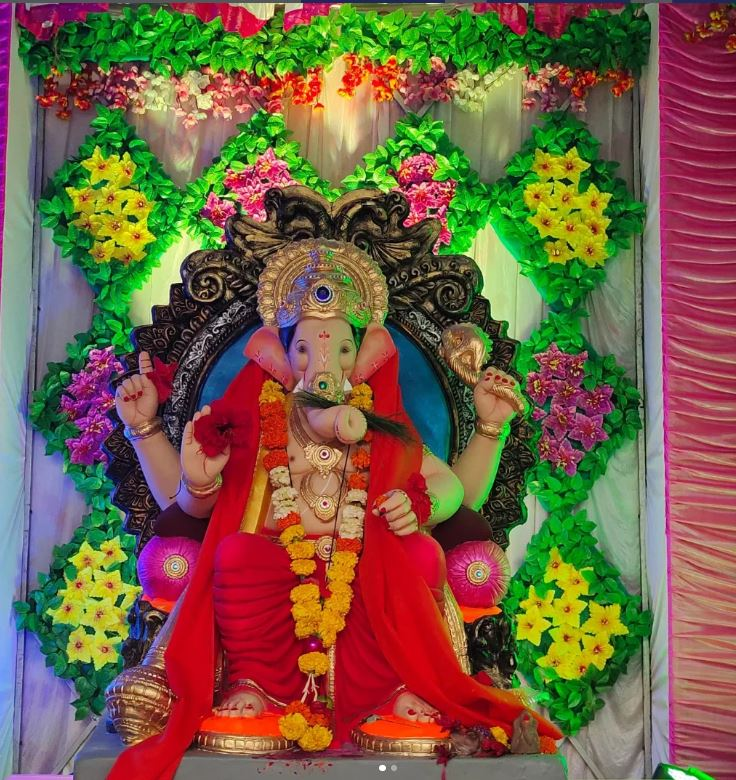
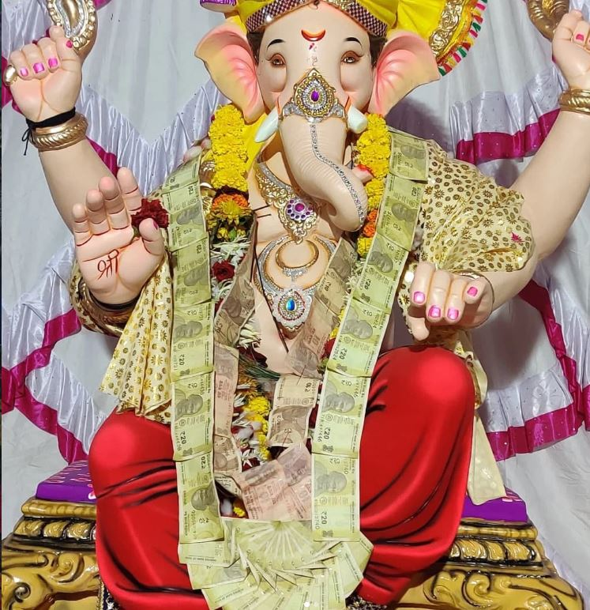
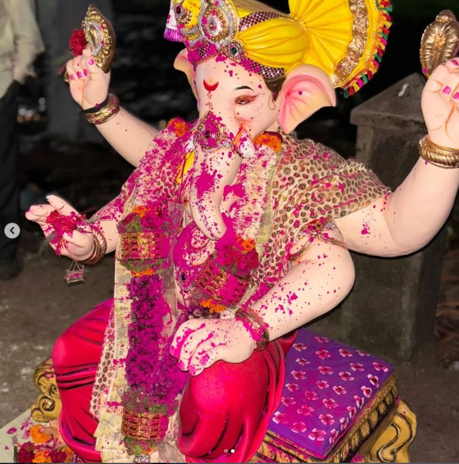
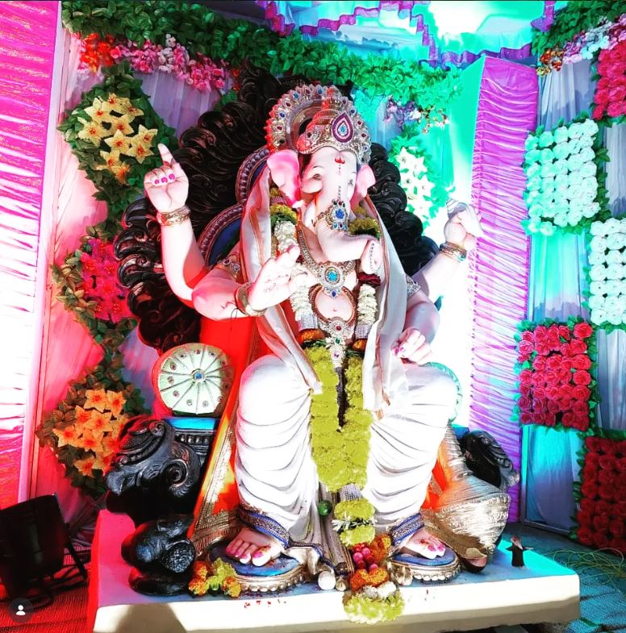

शुभारंभाचा देव • मंगलमूर्ती • विघ्नहर्ता
भक्ती, संस्कृती आणि सामाजिक बांधिलकीचा सुंदर उत्सव आपल्या सर्वांसोबत साजरा करूया.
भक्ती, एकता आणि सामाजिक बांधिलकी जपणारे आपले श्री गणेश मंडळ.

श्री गणेश मंडळाच्या माध्यमातून दरवर्षी गणेशोत्सव मोठ्या उत्साहात आणि भक्तिभावाने साजरा केला जातो.
धार्मिक कार्यक्रमांसोबतच सामाजिक उपक्रम, सांस्कृतिक कार्यक्रम आणि समाजोपयोगी उपक्रमांमध्ये मंडळाचा सक्रिय सहभाग असतो.
भक्तिमय आणि सांस्कृतिक कार्यक्रमांचा आनंद घ्या.
सन १९८२ मध्ये श्री गणेश मंडळाची भक्तिभावाने स्थापना करण्यात आली.
१९८२ पासून अखंड परंपराभक्तिमय वातावरणात श्री गणेशाची सामूहिक आरती.
विविध सांस्कृतिक आणि मनोरंजनात्मक कार्यक्रमांचे आयोजन.
सायंकाळी ०७:०० वा.श्री गणेशाची विधिवत पूजा, आरती आणि श्री गणेशाच्या आशीर्वादाने सर्व भाविकांसाठी प्रेमपूर्वक जेवणाचे आयोजन.
पूजेची वेळ लवकरचभक्तिभावाने बाप्पाला निरोप देत विसर्जन सोहळा.
दुपारी ०४:०० वा.गणेशोत्सवातील सुंदर क्षण आपल्या आठवणींत जपण्यासाठी.



आपल्या सहभागातून भक्ती, संस्कृती आणि समाजसेवेचा हा उत्सव आणखी सुंदर बनवूया.
गणेशोत्सवाशी संबंधित माहितीसाठी आमच्याशी संपर्क साधा.